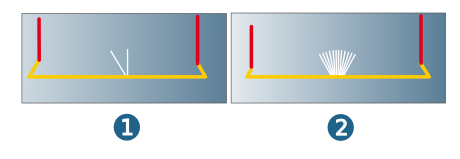

Postprocessor
Settings for machine definition and machine administration and to create NC files in hyperMILL.
NC files
 |
Machine: Activate and click the icon to select or redefine a machine. |
|
Turret setup: If a Virtual Machine with support for turning jobs with a turret is defined as a machine (see → → → ), this is symbolized by an icon. Click the icon to open the Turret setups administration dialog to assign the required Names and, if required, a Comment for this machine configuration. Click the New button to define a new turret setup. The following functions are also available: Edit..., Delete..., Copy..., Export..., and Default.... |
NC directory: Select this option to adapt the NC directory for saving the generated NC programs to the project directory. The path is displayed and cannot be changed.
Use document settings: Enabled by default if NC directory is selected. The document settings apply to the NC directory for saving the generated NC programs (Setup hyperMILL, dialog page Document, Global Working Space).
|
Disable the option to define the path for the NC directory by clicking the icon. |
NC file names: Enable and select the method for naming the NC files (Single mode/Package mode).
Single mode: Creates an NC file for each job in the job list. If this option is not selected, the settings from the machine definition will be used.
The following variables are available to define the file name:
|
|
Job list name. |
|
|
Job name. |
|
|
Job ID. |
|
|
Position of the job in the hyperVIEW job list. |
Jobs and compound jobs, which should not be postprocessed, are disregarded when determining the value of <COUNTER>. This applies to jobs for which the Generate NC file option on the General dialog page is disabled or for compound jobs
that have no jobs for NC generation. Jobs for which the option create NC file is disabled, are not included in the hyperVIEW simulation.
Rule for filename generation: As standard, the file name of the NC file is composed of the following elements: Jobname_Job ID.
Increment to job ID: This value is added to the job ID.
Package mode: All NC data for the selected joblist is written to a file. The name of the job list is used as the file prefix.
Start of counter: Counters that the programme can output for NC file names. The NC file names created in single mode are numbered consecutively.
Compound job as single job: Only available in single mode. If the function is enabled, all jobs in a compound job will be written to a single NC file. The name of the compound job is used for the placeholder in the NC file.
Vector fine interpolation: Enabled by default. The definition of a maximum permissible angle change makes it possible for vector fine interpolation to control machine movements in the case of vector changes.
If you enable the function, hyperMILL will insert intermediate points into the toolpath in order to avoid any diverging interpolation of the machine from the calculated toolpath.
(1) Vector fine interpolation disabled. (2) Vector fine interpolation enabled with a Max. angle of 5.
|  |
Note
OPEN MIND recommends always enabling this function, in particular, however, for machines without great circle interpolation.
5X Rapid mode
Default: 5X rapid tool movements occur as defined in the cycle.
Optimized: Select this option to avoid a possible pole pass and high acceleration of the C axis for 5X machining fast travel movements. This is made possible by simultaneous 5-axis rotary movements (conical interpolation). On the whole, the movements of the machine are softer, faster and more predictable.